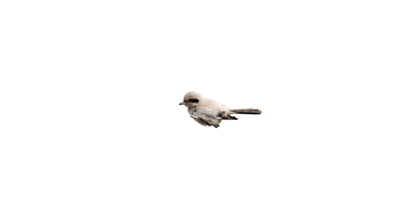
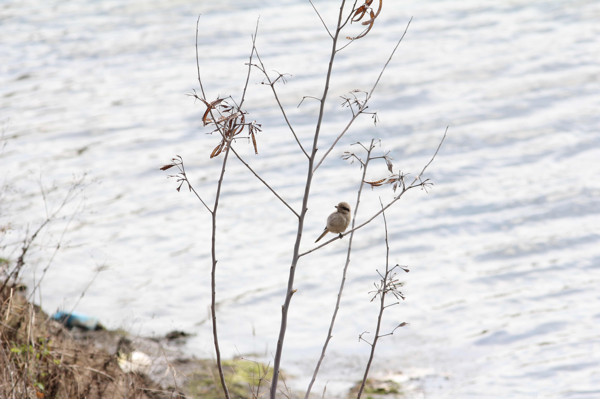

大量的麵包蟲誘拍使得灰伯勞的健康受到傷害，此外，油汙也影響其羽毛，飛行、防水、禦寒或預防疾病等功能都受到影響。
台南野鳥學會總幹事林岱瑢就說，寵物飼養、受傷鳥類救援時，的確可用麵包蟲餵食，但由於麵包蟲並無營養價值，多半會添加營養劑，維持鳥類生命。
灰伯勞主要食用彈塗魚、螃蟹，北門區一帶食物來源豐富，並不需鳥友餵食就能生存。
台南鳥會呼籲鳥友，不要餵食灰伯勞以取得心目中想要的照片。灰伯勞在當地有豐富食物可以食用，包括目前觀察到的牠會捕食彈塗魚和螃蟹。
只要在活動範圍耐心等待，一定有機會拍到自然又美麗作品。